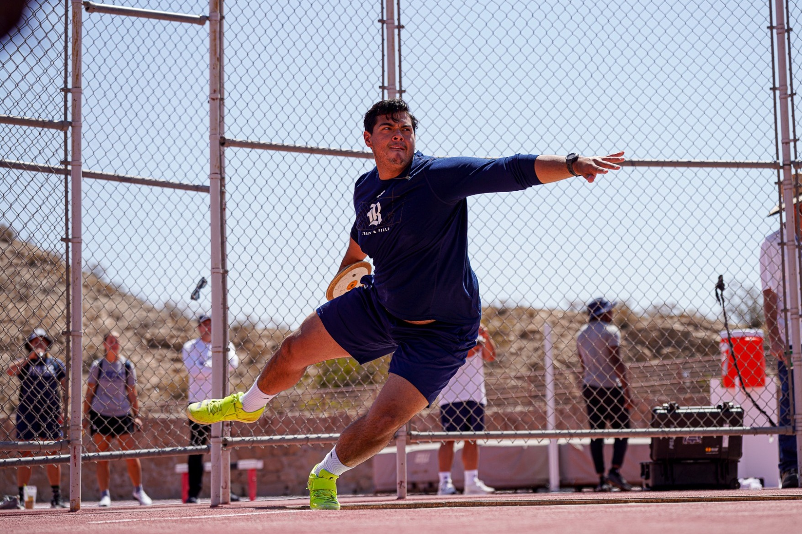
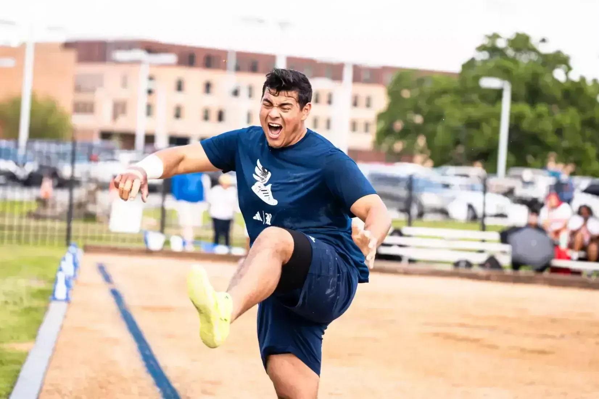
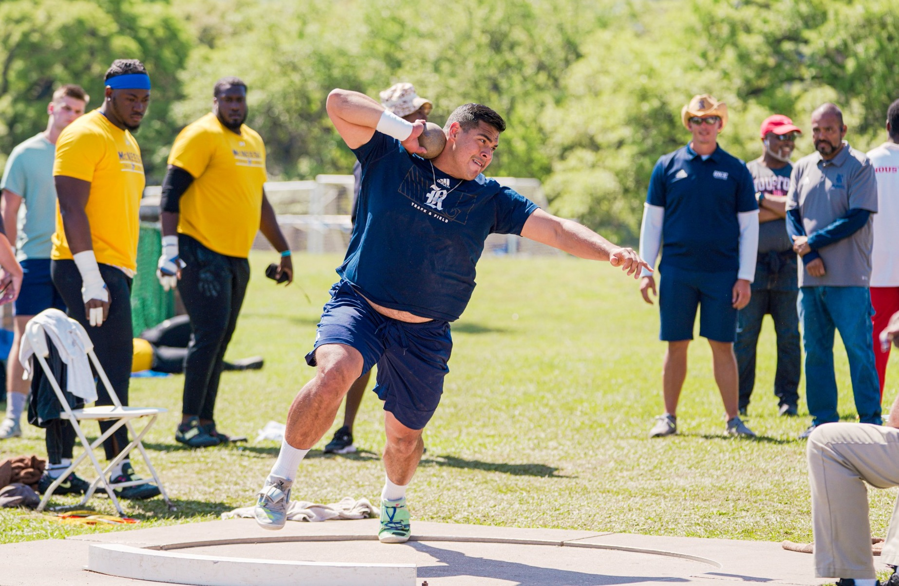

Rice UniversityClass of 2025
Engineer · NCAA Division I Athlete
Engineering discipline.Athletic drive.
I earned a Mechanical Engineering degree while competing for five seasons in Rice Track & Field. Both demanded the same standard: prepare deliberately, measure progress, and perform when it counts.

Dual performance
Two arenas. One standard.
Technical rigor in the classroom. Consistent execution in competition.Academics
Mechanical Engineering
A foundation in mechanics, dynamics, analysis, design, and systems thinking—focused on understanding how complex systems behave and how to improve them.
- Degree
- Bachelor of Science · May 2025
- Specialization
- Mechanics / Dynamics
- Recognition
- 2024–25 American All-Academic Team
- Conference honors
- C-USA Commissioner’s Honor Roll and Academic Medal
Athletics
Rice Track & Field
Five seasons in the throws program required year-round strength development, technical repetition, recovery, and the ability to deliver under championship pressure.
- Program
- Rice Men’s Track & Field
- Events
- Shot Put and Discus
- Competition
- NCAA Division I
- Team contribution
- 24 conference championship points
In competition
Five seasons.
One standard.
The work behind every result: technical practice, strength development, preparation, and repeatable execution.
Shot PutPower, timing, and repeatable technique
DiscusPrecision through movement and control
All-AcademicPerformance across both commitments



